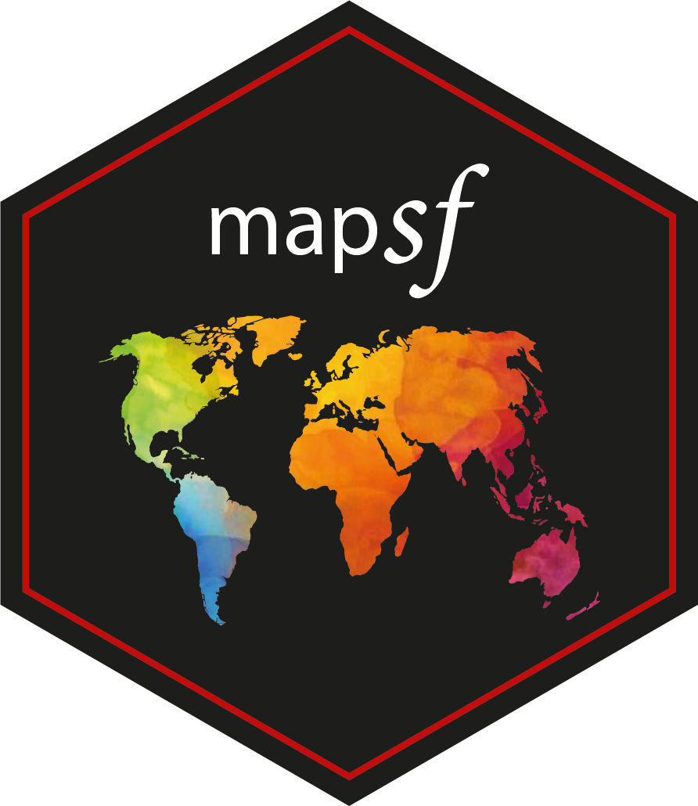

4 mapsf

L’écosystème spatial du logiciel libre R est riche, dynamique et mature et plusieurs packages permettent d’importer, de traiter et de représenter les données spatiales. Le package mapsf (Giraud, 2021) s’appuie sur cet écosystème pour intégrer la création de cartes thématiques de qualité dans les chaînes de traitement avec R.
D’autres packages peuvent être utilisés pour réaliser des cartes thématiques. Le package ggplot2 (Wickham, 2016), en association avec le package ggspatial (Dunnington, 2021), permet par exemple d’afficher des objets spatiaux et de réaliser des cartes thématiques simples. Le package tmap (Tennekes, 2018) est dédié à la création de cartes thématiques, il utilise une syntaxe proche de celle de ggplot2 (enchaînement d’instructions combinées avec le signe ‘+’). La documentation et les tutoriels pour utiliser ces deux packages sont facilement accessibles sur le web.
Ici, nous utiliserons principalement le package mapsf dont les fonctionnalités sont assez complètes et la prise en main plutôt simple. De plus, le package est relativement léger.
mapsf permet de créer la plupart des types de carte utilisés habituellement en cartographie statistique (cartes choroplèthes, typologies, symboles proportionnels ou gradués…).
Pour chaque type de carte, plusieurs paramètres permettent de personnaliser la représentation cartographique. Ces paramètres sont les mêmes que ceux que l’on retrouve dans les logiciels de SIG ou de cartographie usuels (par exemple, le choix des discrétisations et des palettes de couleurs, la modification de de la taille des symboles ou la personnalisation des légendes).
Associées aux fonctions de représentation des données d’autres fonctions sont dédiées à l’habillage cartographique (thèmes ou chartes graphiques, légendes, échelles, flèches d’orientation, titre, crédits, annotations…), à la création de cartons ou à l’export des cartes.
mapsf est le successeur de cartography (Giraud et Lambert, 2018), il offre les mêmes fonctionnalités principales tout en étant plus léger et plus ergonomique.
- La documentation du package accessible sur internet ou directement dans R (
?mapsf). - Une cheat sheet.

- Les vignettes associées au package présentent des exemples de scripts.
- Le blog R Géomatique qui met à disposition ressources et exemples liés au package et plus généralement à l’écosystème spatial de R.